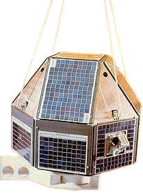

Technology Demonstrators
Space platforms used to validate new instruments, systems and technologies.
TECHNOLOGY DEVELOPMENT / 05
Platforms designed to test new technologies, instruments, propulsion concepts and mission ideas.

Experimental spacecraft and technology demonstrations allow new instruments, systems, propulsion concepts and mission architectures to be evaluated before wider deployment.
02 / EXAMPLES
Space platforms used to validate new instruments, systems and technologies.
Experimental payloads allow new scientific and imaging concepts to be tested in orbit.
Missions can demonstrate orbit control, re-entry and other spacecraft technologies.
Test new technologies under actual space conditions.
Evaluate instruments and payload concepts before larger missions.
Create a foundation for future spacecraft and launch systems.